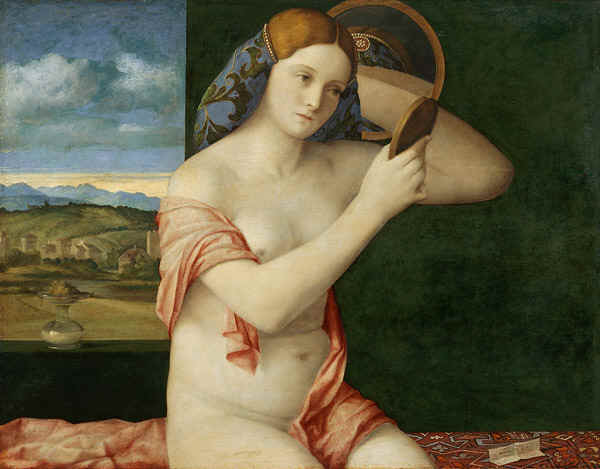
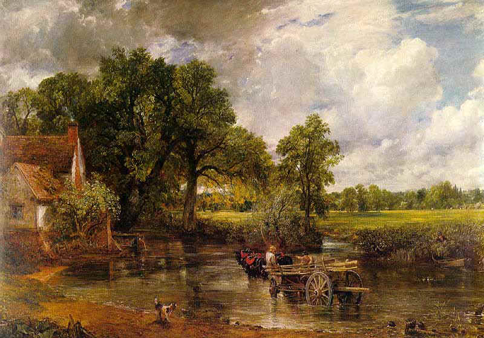
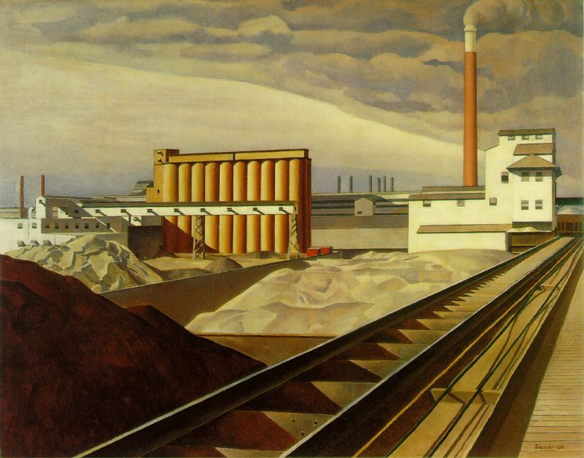

Naked Young Woman in Front of the Mirror by Giovanni Bellini.
"The Elizabethan world
view" was a view of the Middle Ages. (Quattrocento Italy was the setting for
over a third of Shakespeare's plays.)

The Hay Wain by John Constable
The machine turned Nature into an
art form. For the first time men began to regard Nature as a source of aesthetic and
spiritual values. (As Nature lost its existential urgency, it became an object of
serene contemplation and beauty.)

Classic Landscape by Charles Sheeler
Siegfried Giedion has in the
electric age taught us how to see the entire process of mechanization as an art process. (Mechanization
is now an object of sentimental interest to the electronic age.)